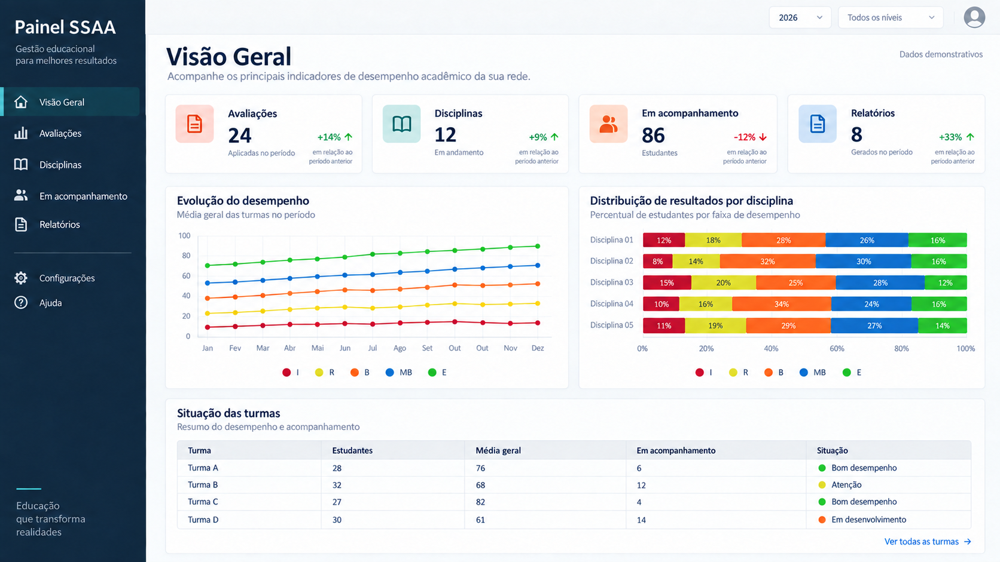
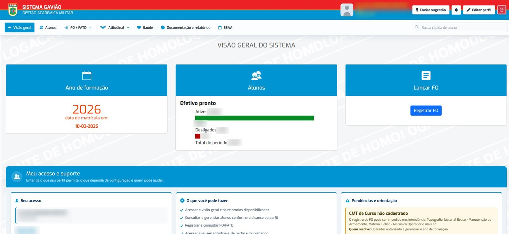
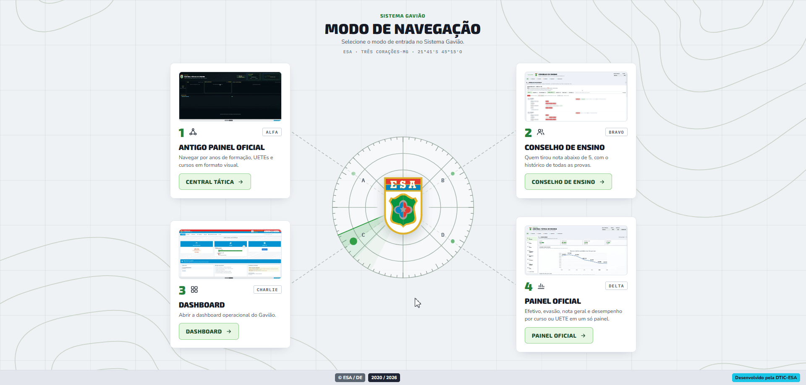
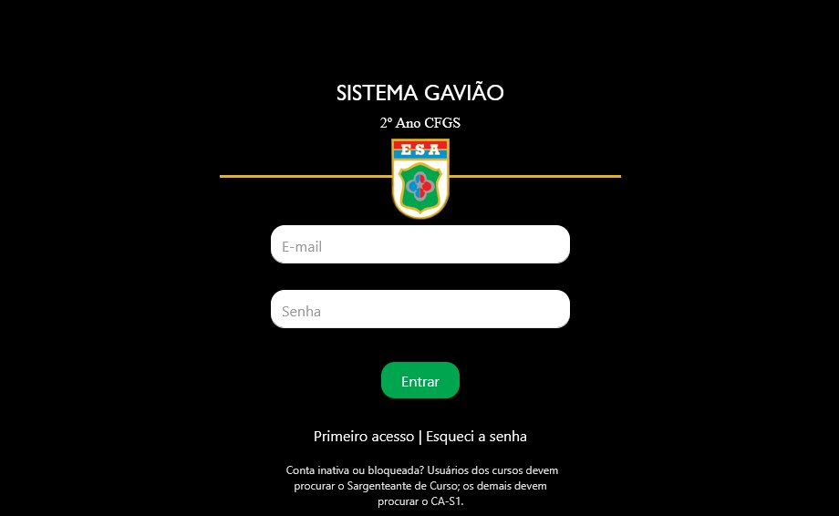
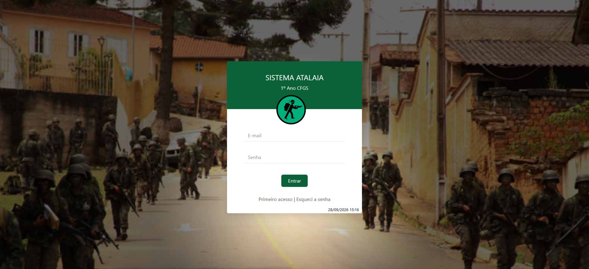
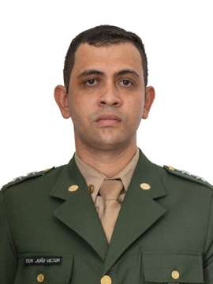

Ciclo de Formação
Importação dos aprovados no concurso, matrícula por ano de formação, passagem do Básico para a Qualificação, reintegração e situações diversas (trancamento e desligamento, a pedido ou ex officio).
Escola de Sargentos das Armas · em produção desde 2020
O Atalaia acompanha o 1º ano do Curso de Formação e Graduação de Sargentos nas UETEs. O Gavião assume o 2º ano na ESA, já dentro de cada arma. Juntos, cobrem da importação do concurso à escolha da especialidade, com painel de comando e app Android para registro disciplinar em campo.
Visão geral
O aprovado no concurso faz o 1º ano (Período Básico) em uma das Unidades Escolares Tecnológicas do Exército, as UETEs, espalhadas pelo país. Esse ano roda no Atalaia: cadastro, notas, Treinamento Físico Militar, Fato Observado e a escolha de QMS, que define a arma do aluno.
No 2º ano (Período de Qualificação) o aluno chega à ESA, em Três Corações (MG), e passa para o Gavião: calendário de provas, lançamento de graus, avaliação atitudinal, disciplina e o painel que o comando usa para ler a turma. As avaliações da qualificação ficam num banco próprio, o SSAA, separado da base administrativa.
O código completo e os dados permanecem no repositório institucional privado. Este portfólio mostra o que o sistema faz e como foi construído.

Mockup criado para o portfólio a partir das capacidades do produto. Métricas, turmas e valores são inteiramente fictícios.
Sistema em uso
Telas reais do Atalaia e do Gavião, capturadas no ambiente de homologação com usuário de teste.




Seis frentes de produto
Cada frente reúne telas, regras e relatórios que antes viviam em planilhas e papel.
Importação dos aprovados no concurso, matrícula por ano de formação, passagem do Básico para a Qualificação, reintegração e situações diversas (trancamento e desligamento, a pedido ou ex officio).
Calendário de provas, lançamento de graus com 2ª chamada, índice de dificuldade por questão, recuperação e demonstrativo de notas com três casas decimais. O TFM entra na média, com bônus para atletas.
Painel Oficial do Diretor com efetivo e evasão, desempenho cognitivo, físico e atitudinal, função de comando e concurso, sempre com a série dos últimos cinco ciclos para comparação.
Fato Observado (FO) positivo, neutro ou negativo, convertido em FATD quando cabe e arquivado na FRAD e na ROD. Encaminhamento em lote, aviso ao sargenteante e estatística por aluno e por observador.
Distribuição das vagas de cada Qualificação Militar de Sargentos pela classificação decrescente dos alunos e pelas prioridades que cada um indicou, com relatório final exportado para planilha.
App Android Gavião FO: o observador registra o Fato Observado no campo, sem rede, e o envio acontece sozinho quando a conexão volta.
Painel Oficial do Diretor
A tela em que o comando da Escola lê a turma. Os tópicos seguem a mesma estrutura: faixas coloridas no alto, gráficos no meio e a grade por arma embaixo.
Um aluno com nota muito baixa não arrasta o retrato da turma inteira.
Cursos de tamanhos diferentes são comparados em %, nunca em contagem crua.
Crítico, atenção, adequado e alto desempenho têm sempre a mesma cor, em qualquer tela e em qualquer arma.
Barra, fatia ou cartão: um clique mostra os alunos que formam aquele número, com a ficha de cada um.
Os totais são conferidos contra o efetivo oficial do ciclo. Nota não lançada aparece como "não avaliado", nunca como zero.
Inscritos por estado e mesorregião do IBGE, com as faixas de cor calculadas por quebras naturais (Jenks) e desenhadas em D3.js.
Android offline-first
Instrução acontece no campo, onde a rede falha. O app Gavião FO guarda no aparelho os alunos que o observador pode ver, registra o Fato Observado sem conexão e sincroniza com o Gavião por uma API móvel dedicada.
◎ Biometria forte para abrir offline, identificador único em cada registro pendente e escrita bloqueada quando o app aponta para a homologação.
Arquitetura
A rede interna bloqueia CDN, então bibliotecas, fontes e mapas são servidos pelo próprio sistema.
Histórico e evolução
Marcos tirados do histórico de commits do repositório privado.
Em produção desde março. Demonstrativo de notas, FO e FATD, revisão de prova, integração do 1º para o 2º período e a primeira escolha de QMS pelo sistema.
TFM no demonstrativo e na escolha de QMS, recuperação de TFM, importação dos alunos do concurso, exportação para o Diploma Digital e FO/FATD no Gavião.
Avaliações da qualificação migradas para o banco SSAA, calendário de avaliação, gerenciador de disciplinas e bônus de atleta no TFM.
Lançamento de GBO com 2ª chamada, análise de resultado de prova, tipo e dificuldade estimada das questões e ciência do aluno na avaliação.
Correção de SQL injection, backup diário agendado com envio por e-mail, situações diversas e filtros na ROD.
App Android e API móvel, Bootstrap 5, mensagens com e-mail e Telegram, Painel Oficial do Diretor, mapa do concurso e testes automatizados no CI.
COP Educação
Gestão, desenvolvimento, dados e design trabalhando de forma integrada para transformar necessidades em soluções.

Gestor do Desenvolvimento
Desenvolvimento e Ciência de Dados
Desenvolvimento e Design · Painel Oficial do Diretor e mapa do concurso
Equipe apresentada no painel público do COP Educação. Imagens utilizadas com autorização para este portfólio.
Atuação profissional
Regra de negócio militar traduzida em consulta, tela e teste.
Explorar os exemplosDestaques técnicos
Um único seletor de ano de formação e um de UETE/curso, com a mesma fonte de dados em todas as telas.
Perfis e permissões conferidos no backend. Esconder o botão não basta.
Banco cifrado no aparelho, fila local e retomada automática do envio.
Pacote por PR com manifesto SHA-256 e backup do que muda. Script SQL sempre aplicado à mão.
Transparência
O conteúdo público inclui documentação e exemplos demonstrativos escritos para este repositório, além de capturas de tela do ambiente de homologação feitas com usuário de teste, sem dados de alunos.
Não são públicos: o código completo, o histórico institucional, credenciais, dados pessoais, configurações internas e dados de produção.